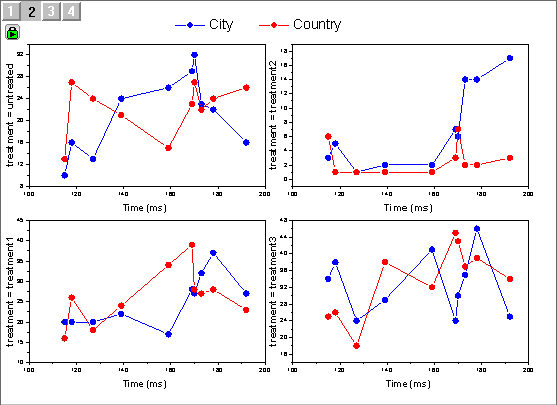

Clusterdiagramm
cluster-plot

Datenanforderungen
Idealerweise müssen Sie mindestens zwei Y-Spalten als Eingabedaten haben, von denen eine die Gruppeninformationen enthält. Optional können Sie über zusätzliche Spalte(n) dazu nutzen, um die Zeichnungsfarbe/Symbolform/Symbolgröße abzubilden.
Diagramm erstellen
Zum Öffnen des Dialogs plot_bygroup haben Sie zwei Möglichkeiten:
- Select Plot> Categorical: Cluster Plot menu items
- Klicken Sie auf die Schaltfläche
 auf der Symbolleiste 2D-Grafiken.
auf der Symbolleiste 2D-Grafiken.
Im aufgerufenen Dialog können Sie
- den Eingabedatenbereich auswählen (Fehlerbalken wird unterstützt) und mindestens eine Gruppenspalte hinzufügen,
- den Diagrammtyp festlegen,
- bestimmen, ob die Zeichnungsfarbe oder die Symbolform/-größe abgebildet werden sollen,
- bestimmen, wie die Layer verknüpft werden,
- das Layout der Felder entscheiden.
Lesen Sie auf dieser Seite Einzelheiten zu den Dialogbedienelementen.
Nach dem Erzeugen des Clusterdiagramms können Sie auf das grüne Schloss im Diagramm klicken und Layer zeigen/verbergen auswählen, um einige Gruppenelemente zu filtern.
Schnelle Beispiele
Beispiel 1: Clusterdiagramm erstellen
Das folgende Beispiel verwendet die Daten <Origin-Verzeichnis>/Samples/Statistics/body.dat, importiert über Datei: Import: Einzelnes ASCII mit den Standardeinstellungen. Der Datensatz enthält zwei Gruppenspalten: age (Col(B)) und gender (Col(C)). Es sollen die Daten Height vs. Weight in einem Punktdiagramm gezeichnet werden, wobei die Punkte in den Feldern Male und Female kategorisiert und farblich nach ihrem Alter unterschieden werden.
- Klicken Sie mit der rechten Maustaste auf Spalte D und wählen Sie Setzen als: Als X setzen im Kontextmenü, um sie als X-Spalte festzulegen.
- Markieren Sie die Spalten col(D) und col(E) und wählen Sie dann Zeichnen > 2D: Clusterdiagramm. Legen Sie im aufgerufenen Dialog Folgendes fest.
Klicken Sie auf OK, um das Clusterdiagramm zu erstellen.
Beispiel 2: Automatisches Aktualisieren des Clusterdiagramms, wenn die Gruppenspalte geändert wird
Das folgende Beispiel verwendet den Datensatz <Origin-Verzeichnis>/Samples/Statistics/LogRegData.dat, importiert über Datei: Import: Einzelnes ASCII mit den Standardeinstellungen. Der Datensatz enthält zwei Gruppenspalten: Gender (Col(C)) und Career_Change (Col(D)). Nach diesen zwei Gruppenspalten soll ein Clusterdiagramm gezeichnet werden. Wenn Sie die Gruppenspalten filtern, kann das Clusterdiagramm entsprechend aktualisiert werden.
- Markieren Sie die Spalten col(A) und col(B) und wählen Sie Zeichnen > 2D: Clusterdiagramm. Setzen Sie die folgenden Optionen im aufgerufenen Dialog:
- Diagrammtyp = Punkt
- Variable für separate Layer > Horizontal = col(C):Gender, Vertikal = col(D):Career_Change
- Aktivieren Sie Achsenstellungen > Einheitliche X-Skala.
- Aktivieren Sie Achsenrahmen zeigen.
Klicken Sie auf OK, um das Clusterdiagramm zu erstellen.
- Jetzt filtern Sie die Gruppenelemente, um zu sehen, wie das Diagramm die Verteilung der Gehälter (salary) dynamisch für die verschiedenen Altersstufen anzeigt. Klicken Sie auf das grüne Schloss oben links im Diagramm und wählen Sie Layer zeigen/verbergen.
|
Wenn Sie sehen möchten, wie die Geschlechtsvariablen (gender) die Gehälterverteilung bei Personen beeinflusst, die ihren Job gewechselt haben. |
Wenn Sie sehen möchten, wie ein Jobwechsel die Gehälterverteilung bei Frauen (female) beeinflusst. |
| Filterbedingung |
|
|
| Clusterdiagramm |
|
 |
Hinweis: Sie können Filter zum Quellarbeitsblatt hinzufügen. Das Ändern der Filterbedingung aktualisiert das Clusterdiagramm auch entsprechend.
Beispiel 3: Clusterdiagramm mit einem Feld erstellen
Das folgende Beispiel verwendet den Datensatz in Trellis Plots - Overlap Panels with Multiple Categories Combination.opju im Lernzentrum. Sie werden mehrere Gruppen in ein Feld zeichnen, in dem jede Gruppe seine eigene Y-Achse hat.
- Wählen Sie Hilfe: Lernzentrum.
- Wählen Sie im geöffneten Dialog die Registerkarte Diagrammbeispiel auf der linken Seite und dann die Option Trellis-Diagramm auf der rechten Seite.
- Klicken Sie doppelt auf die erste Zelle der dritten Zeile, um Trellis Plots - Overlap Panels with Multiple Categories Combination.opju zu öffnen. Aktivieren Sie die Arbeitsmappe Book8. Der Datensatz Adults vs. Foals wird in vier Gruppen geteilt nach unterschiedlicher Location (col(F)) (Ort) und Treatment (col(G)) (Behandlung). Sie erstellen ein Clusterdiagramm, in dem vier Gruppen sich überschneiden.
- Markieren Sie die Spalte col(C) und wählen Sie Zeichnen > 2D: Clusterdiagramm. Legen Sie die folgenden Optionen im Dialog fest:
- Diagrammtyp = Linie+Symbol
- Variable für separate Layer > Horizontal = col(F): Location und col(G): Treatment
- Layer anordnen = Alle Layer überschneiden sich
- Aktivieren Sie Gruppeninfo im Y-Titel zeigen
- Aktivieren Sie Achsenrahmen zeigen.
Klicken Sie auf OK, um das Clusterdiagramm zu erstellen.

 |
- Sie bemerken vielleicht, dass sowohl Trellis-Diagramm als auch Clusterdiagramm verschiedene Gruppen in ein Feld zeichnen. Das Trellis-Diagramm erfordert, dass alle Gruppen die gleiche XY-Achsenskalierung teilen, während das Clusterdiagramm flexiblere Skalierungsoptionen bietet. Es zeichnet Gruppen in separate Layer, so dass Sie wählen können, entweder die XY-Achsenskalierung unter allen Layern zu verknüpfen ODER jeden Layer eine eigene Achsenskalierung haben zu lassen. Dies ist nützlich, wenn die Y-Werte sich von Gruppe zu Gruppe sehr unterscheiden.
- Damit die Farbe der Y-Achse der Zeichnungsfarbe entspricht, setzen Sie die Farbe der Linie auf der Registerkarte Linie und Hilfsstriche im Dialog Achsen auf Auto.
|
Beispiel 4: Felder durch Ändern der kategorialen Ordnung neu ordnen
Das Clusterdiagramm ordnet die Felder in der Reihenfolge an, in der jeder Wert per Standard in der Gruppenspalte erscheint. Die Gruppenspalte ist als kategorial festgelegt, nachdem Sie ein Trellis-Diagramm aus ihr gezeichnet haben. Sie können die kategoriale Spalte neu ordnen, um das Feld neu zu ordnen.
Das folgende Beispiel verwendet die Daten <Origin-Verzeichnis>/Samples/Statistics/automobile_categorical.dat, importiert über Datei: Import: Einzelnes ASCII mit den Standardeinstellungen. Es soll das Diagramm "0~60 mph" vs. "Engine Displacement", gruppiert nach "Country", gezeichnet und dann die kategoriale Reihenfolge zum Neuordnen der Felder benutzerdefiniert angepasst werden.
- Markieren Sie keine Spalte und wählen Sie Zeichnen > 2D: Clusterdiagramm. Legen Sie die folgenden Optionen im Dialog fest:
- Eingabe > Bereich 1> X = col(D):0~60 mph, Y = col(G):Engine Displacement
- Diagrammtyp = Symbol
- Variable für separate Layer > Horizontal = col(H):Country
- Aktivieren Sie Einheitliche X-Skala.
- Aktivieren Sie Achsenrahmen zeigen.
Klicken Sie auf OK, um das Clusterdiagramm zu erstellen.
- Jetzt sortieren wir die Länder in absteigender Reihenfolge und ordnen die Diagrammfelder entsprechend neu. Aktivieren Sie das Quellarbeitsblatt. Klicken Sie doppelt auf die Beschriftungszeile Kategorien von Col(H). Der Dialog Kategorien wird geöffnet.
- Aktivieren Sie Kategorien benutzerdefiniert anpassen (Hinzufügen, Löschen, Beliebige Reihenfolge festlegen) und klicken Sie zweimal auf den Header Kategorie in der Tabelle. Die Länder werden in absteigender Reihenfolge sortiert.

Die Felder werden entsprechend aktualisiert.
Vorlage
groupedplot.otpu (im EXE-Verzeichnis von Origin installiert)
Hinweise
- Neben dem Clusterdiagramm unterstützt Origin mehrere Hilfsmittel zum Zeichnen von Gruppendaten. Lesen Sie auf dieser Seite weitere Einzelheiten zum Erstellen und benutzerdefinierten Anpassen eines Gruppendiagramms.
- Die Felder werden in der Reihenfolge angeordnet, in der jedes Element per Standard in der Gruppenspalte erscheint. Um die Reihenfolge der Felder benutzerdefiniert anzupassen, setzen Sie die Gruppenspalte(n) auf kategorisch und modifizieren Sie die Reihenfolge auf der Registerkarte Kategorien.
- Wenn die Anzahl der Felder größer als 50 ist, wird die Berechnung per Standard langsam und die Vorschau im Dialog plot_bygroup wird deaktiviert. Die Einschränkung wird von der Systemvariablen @nop gesteuert.